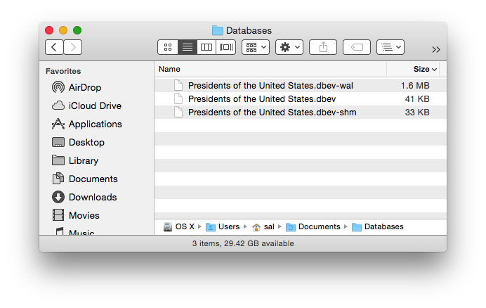

After reviewing the previous page about creating an SQLite database from a Numbers table, the next topic in learning how to use SQLite with Numbers, is to learn how to create a Numbers table using the content of an SQLite database. The script provided on this page outlines the basic technique for doing so.
DOWNLOAD a ZIP archive of the example SQLite database and related files. Unpack the archive and place the SQLite database files into the Databases folder in your Documents folder. NOTE: requires OS X v10.10 (Yosemite)

Open the example script in the Script Editor application. Two versions are provided: the first is for OS X v10.10 (Yosemite) and higher, and the second is for OS X v10.9 (Mavericks):
NOTE: When prompted by the script, choose the main database file, which is the one with the file extension of “.dbev”.
When run, the script will parse the database and create a new Numbers document containing a single table comprised of rows of data extracted from the records of the chosen database (⬇ see below )
Mention of third-party websites and products is for informational purposes only and constitutes neither an endorsement nor a recommendation. MACOSXAUTOMATION.COM assumes no responsibility with regard to the selection, performance or use of information or products found at third-party websites. MACOSXAUTOMATION.COM provides this only as a convenience to our users. MACOSXAUTOMATION.COM has not tested the information found on these sites and makes no representations regarding its accuracy or reliability. There are risks inherent in the use of any information or products found on the Internet, and MACOSXAUTOMATION.COM assumes no responsibility in this regard. Please understand that a third-party site is independent from MACOSXAUTOMATION.COM and that MACOSXAUTOMATION.COM has no control over the content on that website. Please contact the vendor for additional information.